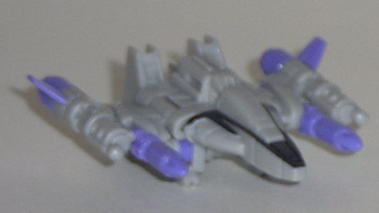
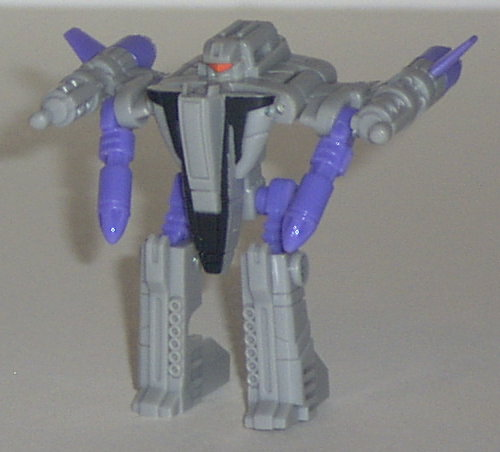
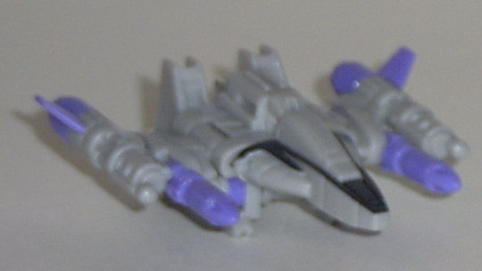
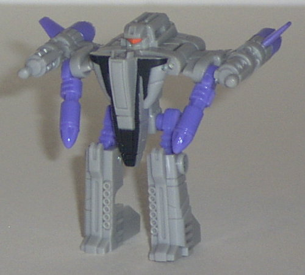
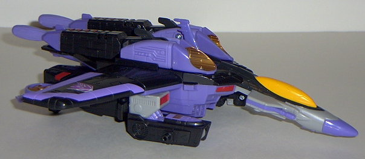
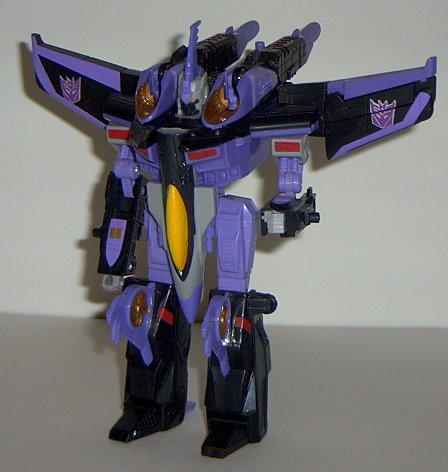

Thunderclash
Thunderclash
 
Allegiance : Minicon
Size : Mini-Con
Difficulty of Transformation : Very Easy
Color Scheme : Light gray, light purple, and some black and bright orange
Rating : 7.2
Thunderclash


Allegiance
: Minicon
Size
: Mini-Con
Difficulty of Transformation
: Very
Easy
Color Scheme
: Light gray, light
purple, and some black and bright orange
Rating
: 7.2
Vehicle mode is some
type of futuristic space fighter. This mode looks pretty darn awesome.
Rarely do see a Minicon with some real firepower, and this guy's certainly
got it- two machine guns on the outer wings, and two large lasers closer
to the cockpit. He also has adjustable wings in TWO places, which is a
big bonus. The robot legs on the bottom can take away from the sleekness
of this mode a little, but it's not too bad. The mold detailing is fantastic,
but Thunderclash could really use some more paint detailing- some black
stripes on his cockpit and his robot head visor are the only paint apps
on him. His Minicon symbol is on the back of his right wing, and his Minicon
port is under the very tip of the nosecone. Unfortunately, this makes him
rather hard to stick onto Skywarp's main Minicon port- the missile launchers
usually get in the way. Grrr.
Thunderclash's robot
mode is also pretty cool, except for his arms. His arms are just his laser
guns from vehicle mode, and are kinda shrimpy and dorky when compared to
his other robot parts in this mode. Plus, he has no elbows- although at
least his other major points of articulation are there (at the hips, knees,
and shoulders). Otherwise, this mode is pretty stylized and sleek, and
I like the visor on his face. Another little fun nod is that his transformation
is similar to a simplified version of Skywarp's. Heh.
Thunderclash is a pretty
fun Minicon, although he could use some more paint detailing and some real
arms in robot mode. Recommended.
 Skywarp
Skywarp


Allegiance
: Decepticon
Size
: Max-Con
Difficulty of Transformation
: Medium
Color Scheme
: Light purple, black,
light gray, and some red, bronze, "cheese" yellow, and bright orange
Powerlinx ports
: 3 (1 gimmicked)
Rating
: 9.0
(NOTE: Because this is a repaint, this is not a full-blown review. This mainly covers any changes made to the mold and the color scheme, and merely compares it to Armada Starscream. For a review on the mold itself, read the review of Armada Starscream here .)
Skywarp here completes
the last of the Armada seekers, which are clearly taken off of the original
G1 seekers of the same name. Like Starscream and
Thundercracker
,
Skywarp has a color scheme here that is nearly identical to his G1 version,
and it's lovely. Black and purple is one of the bestest color schemes ever,
and the gray, copper, and red highlights only add to the beauuuty. The
Decepticon symbols on his wings aren't just blobs of paint, either, they've
got nice white lines and details now! Of course, having three of the same
mold released in less than a year is risky, so Hasbro remolded about a
quarter of the parts on Skywarp (as well as his Minicon) to make him look
a bit more "different" from Starscream and Thundercracker. His rear wings
are remolded, for one; they've not got nifty bronze thrusters built into
them, and are an improvement over the original, "normal" wings, even if
they're too small to really be plausible if Skywarp was a real-life vehicle.
The nosecone of the plane has also been remolded; instead of small wings
on the side of the cockpit, you'll see little guns. Although I do appreciate
the added firepower, I have to say that that long of a nosecone looks a
bit odd without some wings on it. Finally, the head has also been remolded-
and it looks REALLY awesome now. He has a fin/mohawk now (think
Sky-Byte
),
a face place, and red eyes. So eeevil... Unfortunately, one of the downsides
to this is that that mini-wing sticking up out of the center of the vehicle
mode looks kinda weird. An odd mold abnormality is apparent in Skywarp;
his leg gears are set so that they can never click into a place level with
each other- one leg is always lifted slightly higher than the other. This
is a very prevalent error- it seems that about 80% of the Skywarp toys
have this- and it hasn't been fixed. It's not TOO annoying, though, it
just takes an extra second or so to pose him. Skywarp's electronics and
sounds are all the same, so no changes there. (And yes, Thunderclash can
fit under his cockpit, just like Swindle could on Starscream and Zapmaster
on Thundercracker.)
Skywarp is a pretty
awesome toy, and the best of the seekers, in my opinion. He's about as
good as this mold is going to get. Too bad about that thing with the leg
gears, though...
No Stats
Review by Beastbot